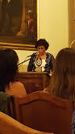
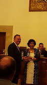

")
")
"Investigación, innovación y docencia, los tres ejes de la vida académica" discurso de agradecimiento de Asunción Gómez-Pérez
Discurso de agradecimiento de Asunción Gómez-Pérez, con motivo de la entrega del premio Aritmel dentro de los Premios Nacionales de Informática 2015
Sr. Vicerrector de Investigación y Transferencia de la Universidad de Salamanca, Excelentísimo Rector de la Universidad Politécnica de Madrid, , Sres. Presidente y Vice-Presidente de la Sociedad Científica Informática de España, Sr. Director de la Escuela Técnica Superior de Ingenieros Informáticos de la UPM, Autoridades, colegas, familiares, amigos, señoras y señores.
Es para mí un gran honor recibir el Premio Aritmel 2015. Me siento muy honrada, orgullosa y feliz por el reconocimiento recibido. Quiero agradecer a la Asociación Española de Inteligencia Artificial, y a su Presidenta, por haber presentado mi candidatura, a los miembros del jurado el haberla seleccionado, y a la Sociedad Científica de Informática de España, su concesión.
Haciendo un breve recorrido por mis 25 años de profesión, me considero una persona afortunada, pues he tenido la posibilidad de combinar tres pilares en los que creo firmemente: investigación, innovación y docencia. Por un lado, la investigación lleva a la innovación, y a transferir soluciones a la industria y, a su vez, la innovación y la transferencia generan nuevos problemas de investigación a los que los investigadores debemos dar respuesta. Pero esto solo no sería universidad. Por ello, desde el principio, traté de integrar investigación, innovación y docencia en el campo de las Ciencias de la Computación e Inteligencia Artificial. Siempre he creído que de esta manera todas ellas se verían mutuamente beneficiadas.
Planteaba Ortega, en Misión de la Universidad, algunas cuestiones que nos han hecho pensar a todos: "¿Es la enseñanza superior sólo profesionalismo e investigación?", y continuaba diciendo que la enseñanza superior es, además, cultura. Pues bien, mi idea de la Universidad, y mucho más en la disciplina de Informática, es que se ha de apoyar en esos tres pilares: el científico, el compromiso que tiene con la sociedad a través de la transferencia tecnológica y la formación de profesionales.
Muy brevemente trataré de reflexionar sobre cómo he enlazado estas tres dimensiones. Mis primeros contactos con la investigación tuvieron lugar en el Laboratorio de Inteligencia Artificial, de la Facultad de Informática, de la Universidad Politécnica de Madrid, en donde estudié la carrera. Allí hice mis primeras aportaciones representando conocimientos en sistemas expertos aplicados a la resolución de problemas identificados por la industria. Estudiar en la UPM me marcó y me instruyó en la visión ingenieril de la informática. Este hecho ha sido el sello de toda mi trayectoria profesional.
Al finalizar mi licenciatura, traté de combinar estas inquietudes: conocer la investigación y el mundo de la empresa. Simultaneé mis estudios de doctorado en Inteligencia Artificial con un MBA. La balanza se inclinó hacia la carrera académica tras realizar una estancia postdoctoral de un año en el Knowledge System Laboratory de la Universidad de Stanford, donde trabajé con Tom Gruber, el padre de las ontologías. Debo esta decisión al Profesor Juan Pazos, quien –de manera muy convincente- me animó a ir. Las vivencias y las experiencias adquiridas en Stanford y en el entorno de Silicon Valley transformaron mi carrera profesional. Allí me di cuenta del reto intelectual que suponía investigar en la frontera del conocimiento, en un entorno altamente competitivo, y aprendí también, que para ser competitivos internacionalmente en investigación se requiere formación, ideas, capacidad, seriedad e intensidad en el trabajo y financiación, ¡MUCHA FINANCIACIÓN! Estas lecciones aprendidas son algo que he transmitido a todos mis estudiantes de doctorado.
En 1995, a¬l regresar a la UPM, mi objetivo era doble. Por un lado, pretendía alcanzar un alto grado de especialización en el tema de ontologías, combinando la investigación incremental seguida en Stanford con la investigación disruptiva, para así abrir nuevos caminos. Por otro lado, quería aplicar estos conocimientos a mi actividad docente, lo que se tradujo en mis primeros trabajos con estudiantes de grado y postgrado, y de cursos de doctorado. En aquel momento se estaba gestando en Europa el área de las ontologías y por ello participé intensamente en su creación. Los eventos científicos internacionales eran los foros en los que se debatían las últimas ideas y resultados, y donde surgían los temas de investigación que posteriormente fueron incluidos en los Programas Marco de la Unión Europea. Actualmente, las ontologías, las tecnologías semánticas y los datos enlazados están ampliamente incorporados en el mercado. En el Programa H2020, todas estas temáticas son transversales, y se aplican en multitud de sectores y dominios empresariales, como son: salud, ciudades inteligentes, industria 4.0, eficiencia energética, gobierno abierto, medio ambiente, transporte, patrimonio, gestión de recursos humanos, y un largo etcétera.
Esta incesante actividad internacional con otros investigadores se vio recompensada con la concesión de mi primer proyecto europeo, en el año 1999, cuando mi hija Carolina tenía dos años y estaba embarazada de las mellizas Asun y María. Esta experiencia internacional me proporciona la financiación necesaria para empezar a construir la semilla de lo que actualmente es el Grupo de Ingeniería Ontológica.
Pero un grupo nace y evoluciona gracias a las personas. Tres merecen especial mención en la etapa inicial: Guadalupe Aguado de Cea, Mariano Fernández López y Oscar Corcho. Gracias a los tres por vuestro empeño, dedicación, entusiasmo, generosidad, y vitalidad, Gracias por vuestras ideas y por esa capacidad intelectual de estar permanentemente en continua renovación, con nuevos retos científicos y tecnológicos.
Actualmente, el grupo que dirijo está formado por más de 30 personas: profesores, investigadores senior, estudiantes de doctorado y de máster, ingenieros de software, y gestores que, con entusiasmo, empeño y pasión, realizan su trabajo diario. Es un equipo altamente competitivo, multidisciplinar (en el que además de informáticos, participan lingüistas, biólogos, geógrafos, periodistas, abogados, etc.), intercultural (15 nacionalidades han trabajado con nosotros), y con una gran visibilidad internacional. Primamos la investigación en Equipo frente a la individualidad, se promueve el brainstorming, la participación en retos o challenges científicos, hackathones y datathones con equipos multidisciplinares, y otras actividades de cultura científica para acercar nuestros trabajos a la sociedad. Todo ello nos ha permitido construir un ecosistema de investigación e innovación, a la vez que mantener una estrecha relación con la industria, nacional y europea.
El trabajo en equipo implica que una parte importante del premio que hoy recibo sea también fruto del trabajo en los 5 proyectos europeos que he coordinado y en los 22 en los que he participado como IP de la UPM. Agradecimiento a mis 22 estudiantes de doctorado, a los numerosos Postdocs (Carmen, Raúl, Elena, Jorge, Mariano, Víctor, Andrés, María, Dani y tantos otros) y a los más de 150 estudiantes que han sido miembros del grupo. Muy especialmente debo agradecer a Ana, José Ángel y Reyes su excelente labor de gestión y administración. Sin su inestimable ayuda, la elaboración de propuestas y su ejecución, las auditorías y otros trámites burocráticos serían realmente un calvario interminable.
Si bien los comienzos suelen ser difíciles, el principal reto se encuentra en escalar, mantener la actividad científica vía los proyectos de I+D+i, e incorporar nuevos estudiantes y doctores a mi grupo de investigación. La financiación obtenida ha sido clave para crecer como equipo, estar en la frontera del conocimiento y mantener activas varias áreas de investigación e innovación -unas incrementales y otras disruptivas, pero todas ellas complementarias, con diferente grado de madurez, con una gran proyección directa en el sector empresarial y, consiguientemente, imbricada en la sociedad-. En el espíritu del grupo se encuentra también el proporcionar servicios a la comunidad investigadora, como lo hemos hecho manteniendo la dbpedia del español, ontologías y vocabularios, y el dominio linkeddata.es, todo ello en español.
Como ya he mencionado en mi intervención, en mi ADN se encuentra la permanente colaboración con empresas e instituciones públicas. Esta colaboración es la que me ha permitido seguir manteniendo, en tiempos de recortes, un equipo de investigación estable, sostenible, competitivo, profesional e internacional. Todo ello radica en que nuestros trabajos de innovación en tecnologías semánticas afrontan retos y problemas reales de la industria, a la que dan soluciones innovadoras. Además, tienen un elevado componente de base tecnológica que se desarrolla siguiendo principios informáticos de ingeniería del software, software que registramos y licenciamos. Ahora bien, el desarrollo de software pese a facilitar la transferencia, disminuye el número de publicaciones. Y como todos saben, los investigadores actualmente se ven presionados por la máxima de publish or perish.
En este contexto, no obstante, nuestros trabajos de investigación e innovación también generan publicaciones con un elevado número de citas y un extraordinario impacto internacional. Nos guiamos por la máxima de publicar metodologías, modelos, métodos, algoritmos y sistemas que suponen un avance científico o que muestran la utilización de las tecnologías semánticas en casos de uso reales. Cuando comencé mi carrera investigadora, no teníamos revistas especializadas en el área de ontologías, no existían los rankings, ni Google Scholar, ni la ANECA, ni toda la “maquinaria engrasada” que existe hoy en día en torno a la publicación y a la evaluación de los investigadores para su promoción. El artículo científico ni se concebía como “una tarea” más del proyecto, ni como la tarea que dirigía el proyecto. El artículo era “el cierre” de la investigación realizada que mostraba a otros investigadores los avances científicos y tecnológicos realizados. Me alegra ver que el ranking de la SCIE de congresos relevantes en informática pone de nuevo en valor a las publicaciones no JCR, en un área tan dinámica y en continua evolución como es la informática. La participación en eventos internacionales, en Workshops especializados, en Symposiums para doctorandos, en organismos de estandarización, y en proyectos europeos son clave para que los jóvenes investigadores conozcan a su comunidad, la comunidad les conozca, y comiencen a colaborar con otros investigadores más allá de su entorno cercano, promoviendo así la movilidad y la colaboración internacional. Los organismos de evaluación deberían valorar más y mejor estas actividades que van más allá del JCR en las promociones de los investigadores jóvenes. Desde el Ministerio y desde las Comunidades Autónomas se deberían promover más actuaciones orientadas a retener el talento existente y a atraer, con contratos competitivos, a los investigadores que en su momento tuvieron que emigrar a otros países para continuar investigando.
Pero mi compromiso con la universidad me ha llevado a acometer también tareas de gestión. Como universitaria comprometida con el desarrollo y la mejora constante de nuestro sistema universitario, he aceptado también responsabilidades de gestión desde las que contribuir a la excelencia de nuestra universidad. Agradezco al Departamento de Inteligencia Artificial la confianza otorgada durante los dos mandatos en la dirección académica, así como a los integrantes de los diferentes equipos: Jacinto González, Daniel Manrique, Antonio Jiménez, Josefa Hernández y Javier Bajo. Sin vuestra ayuda no hubiera sido posible adaptar los estudios al Plan Bolonia, transformar los procesos y procedimientos del Departamento o consolidar los estudios de postgrado en Inteligencia Artificial en la UPM. Gracias a todos. Gracias, Javier, por haber tomado el testigo en la dirección del departamento. Sé que está en muy buenas manos. Recientemente, el Rector de la UPM ha depositado en mí la gran responsabilidad de dirigir el Vicerrectorado de Investigación, Innovación y Doctorado. Gracias, Guillermo, por la confianza otorgada, y por el reto que supone incluir en el mismo Vicerrectorado las tres dimensiones antes mencionadas: la científica, la transferencia tecnológica y la profesional.
Pero nada de esto hubiera podido hacerlo sin la impagable ayuda de mi familia. Conciliar la vida personal y profesional en la Universidad, siendo mujer, no es tarea fácil. Sobre todo cuando se tienen tres hijas: Carolina, de 20 años, y Asun y María, ambas de 17. Fue difícil en los comienzos y sigue siéndolo ahora. Por ello, tengo que valorar y agradecer aún más la generosidad, el respeto, el sacrificio por el tiempo no compartido, las renuncias a tantos momentos, pero también la alegría, el apoyo y el cariño mostrados en todo momento por mis padres, Clara y Pepe, por mis hijas, y sobre todo por mi marido: “Manolo, ¡quién nos iba a decir cuando nos conocimos a los 18 años, que íbamos a recorrer el camino de esta forma!” Así pues, ¡la mitad de este premio es tuyo!
Muchas gracias.
Salamanca, 14 de Septiembre de 2016


Created under Creative Commons License - 2015 OEG.